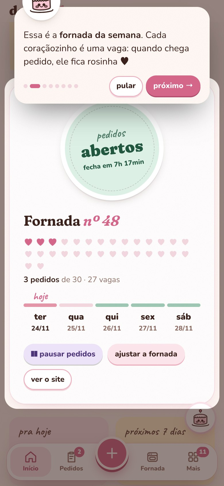
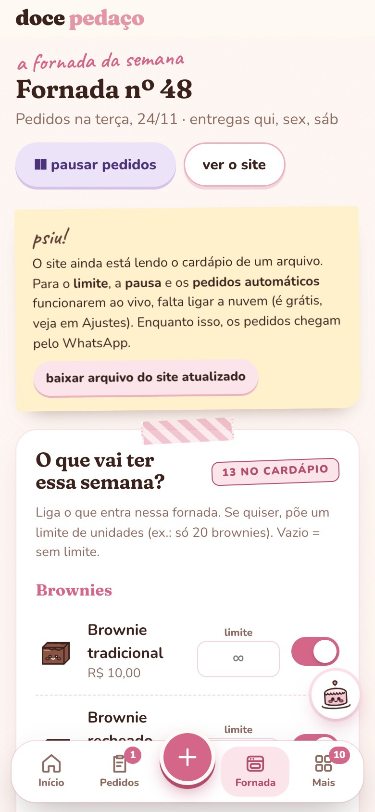
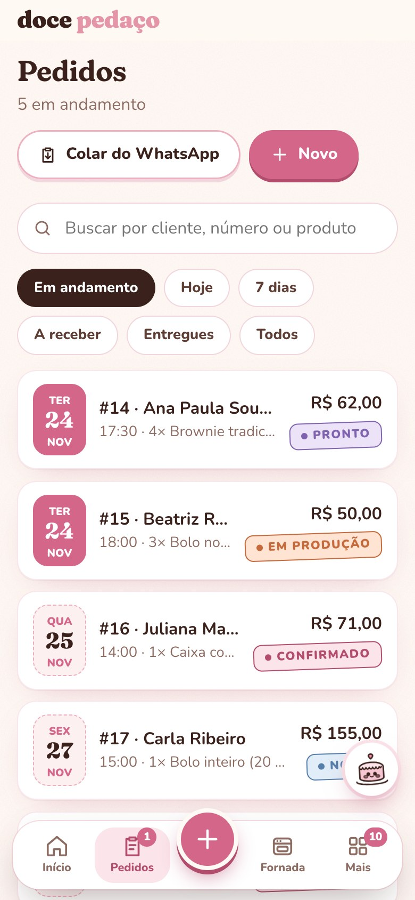
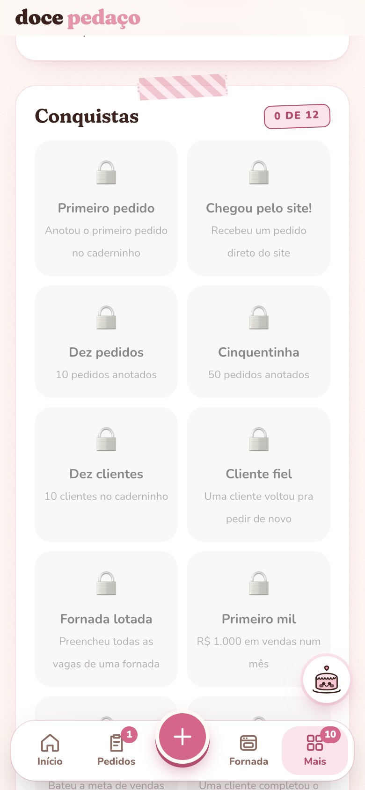

Como usar o caderninho
9 passos curtinhos. Na primeira vez que você abrir, o Pedacinho também faz um tour com você.
uma vez só
Instalar no iPhone
- Abra o link do caderninho no Safari.
- Toque em Compartilhar (quadradinho com a seta) → Adicionar à Tela de Início.
- Abra pelo ícone do bolinho. Em Ajustes, toque em Ativar avisos.
No computador, é só abrir o mesmo link e salvar nos favoritos.

todo dia de manhã
Olhar a tela Início
- O selo mostra se os pedidos estão abertos; cada coraçãozinho é uma vaga.
- Pra fazer hoje: as tarefas do dia, com botões prontos (confirmar, cobrar, avisar).
- Os bilhetinhos coloridos mostram entregas, quanto falta receber e as vendas do mês.

segunda-feira
Montar a fornada
- Vá em Fornada e ligue os doces da semana. Quer só 20 brownies? Põe no limite.
- Ajuste o limite de pedidos (quantos cabem na sua cozinha).
- Escolha os dias: quarta de manhã, quarta à noite, sexta e sábado são opcionais.
Escreva um recadinho pro site, tipo "essa semana tem brownie de Natal 🎄".

terça-feira
Dia de pedidos!
- Poste nos stories: de manhã ("abriu!"), à tarde ("restam X vagas") e à noite ("últimas horas").
- Os pedidos do site caem sozinhos em Pedidos, com confete 🎉
- Cansou ou lotou? Pausar pedidos. Sem culpa: na terça seguinte reabre sozinho.

quando chega um pedido
Confirmar e cobrar
- Abra o pedido e toque em Confirmação: o WhatsApp abre com a mensagem pronta.
- Recebeu o Pix? Registrar pagamento.
- Pedido por conversa? Toque no + e anote em segundos.

quarta em diante
Produzir e entregar
- Agenda → Lista de produção: quanto fazer de cada doce.
- Toque em Avançar: em produção → pronto → entregue.
- Etiquetas: imprime as etiquetas redondas com o nome e a validade.
No dia seguinte à entrega, o caderninho lembra de pedir foto e avaliação.

quando quiser
Pedir ajuda ao Pedacinho
- Toque no bolinho no cantinho da tela.
- Escreva ou fale (🎤): "anota pedido da Ana: 2 brownies pra sexta", "quem me deve?", "pausa os pedidos".
- Toque em 🔈 para ele responder em voz alta.

pra crescer
Ideias e posts
- Ideias: o que está em alta, com fontes. Gostou? + pôr no meu cardápio.
- Divulgação: posts da semana com legenda pronta e suas fotos em arte (post e story).
- Foto nova de doce? Cardápio → toque no doce → escolher foto.

domingo
Descansar (e duas coisinhas)
- Descansar 💗 É sério.
- Ajustes → Baixar backup e guardar no Drive.
- Dar uma olhada em Resultados e nas suas conquistas.

feito com carinho pra vocêabrir meu caderninho